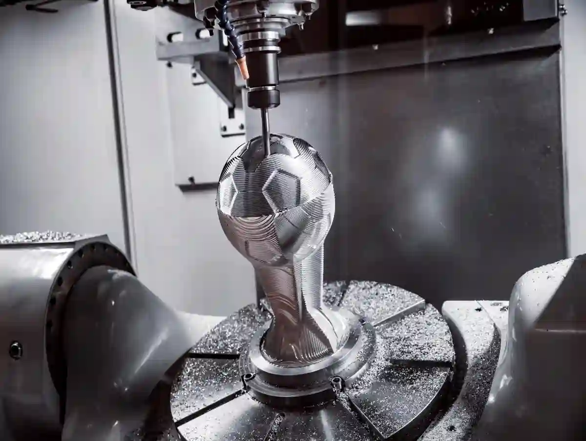
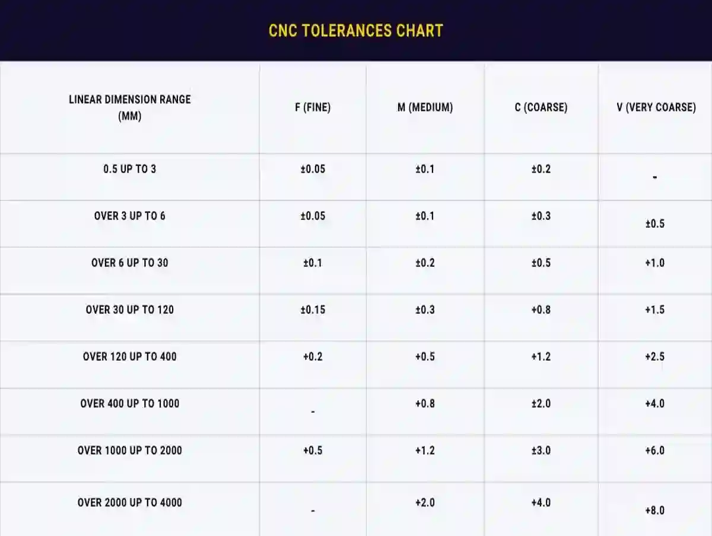
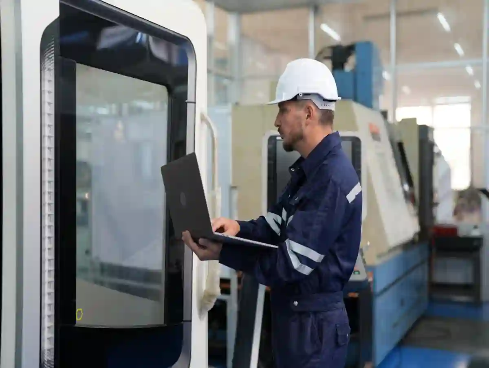

CNC Üretimde Tolerans ve Hassasiyet Yönetimi Rehberi
CNC tabanlı imalat süreçlerinde başarı yalnızca doğru makine parkuruna sahip olmakla sınırlı değildir. Gerçek performans; ölçülebilir kalite, tekrarlanabilir doğruluk ve fonksiyonel uyumun birlikte sağlanmasıyla ortaya çıkar. Bu noktada cnc üretimde tolerans, yalnızca teknik bir parametre değil; maliyet, süre, kalite ve müşteri memnuniyetini doğrudan etkileyen stratejik bir üretim değişkenidir.
Modern imalat dünyasında, özellikle seri ve hassas parça üretiminde tolerans yönetimi; teknik çizimden ölçüme, işleme stratejisinden kalite kontrol planlamasına kadar tüm süreci kapsayan bütüncül bir yaklaşım gerektirir. Mikro ölçekteki bir sapma bile montaj problemlerine, fonksiyon kaybına veya parça reddine neden olabilir. Bu nedenle tolerans kavramının doğru anlaşılması ve üretimle entegre edilmesi kritik önemdedir.
CNC Üretimde Tolerans Kavramının Teknik Temelleri

Tolerans, bir parçanın nominal ölçüsünden izin verilen sapma aralığını ifade eder. CNC üretim söz konusu olduğunda bu kavram; makine hassasiyeti, takım geometrisi, işleme yöntemi ve ölçüm sistemleriyle doğrudan ilişkilidir. cnc tolerans nedir sorusunun yanıtı, yalnızca bir ölçü aralığı değil, aynı zamanda üretim kabiliyetinin sınırlarıdır.
Bir CNC parça üzerinde tolerans belirlenirken şu faktörler birlikte değerlendirilir:
- İşlenecek malzemenin termal ve mekanik davranışı
- Kullanılan CNC tezgâhının eksen doğruluğu
- Kesici takımın aşınma karakteristiği
- İşleme sırası ve bağlama yöntemi
Bu unsurlar göz ardı edildiğinde teorik olarak doğru görünen tolerans değerleri, pratikte sürdürülemez hale gelir.
Nominal Ölçü, Üst ve Alt Sapma Aralıkları
Her teknik çizimde belirtilen nominal ölçü, üretimin referans noktasıdır. Ancak CNC imalatta esas olan, bu ölçünün hangi sınırlar içinde kabul edilebilir olduğudur. cnc üretimde ölçü hassasiyeti, bu sınırların stabil şekilde korunabilmesine bağlıdır.
Üst ve alt sapma aralıkları belirlenirken:
- Parçanın fonksiyonel görevi
- Montaj ilişkileri
- Yük ve çalışma koşulları
dikkate alınır. Gereğinden dar toleranslar maliyeti artırırken, geniş toleranslar fonksiyonel risk oluşturur. Bu denge, hassas CNC üretimin temelidir.
Toleransların Üretim Stratejisine Etkisi
Yanlış tanımlanmış toleranslar, CNC üretim sürecinin tamamını olumsuz etkiler. İşleme süresinin uzaması, takım ömrünün kısalması ve ölçüm tekrarlarının artması kaçınılmaz hale gelir. Bu nedenle hassas cnc üretim, yalnızca yüksek hassasiyetli makinelerle değil, doğru tolerans stratejisiyle mümkündür.
Özellikle seri üretimde, tolerans yönetimi:
- Süreklilik
- Tekrarlanabilirlik
- Ölçüm güvenilirliği
üzerinden ele alınmalıdır. Aksi durumda kalite kontrol süreçleri üretimi yavaşlatan bir unsur haline gelir. Bu yaklaşım, CNC Üretim Teknolojileri hub blog sayfasında ele alınan modern işleme stratejileriyle doğrudan ilişkilidir.
CNC Üretimde Tolerans Türleri ve Uygulama Alanları
CNC tabanlı imalatta toleranslar tek tip değildir. Parçanın fonksiyonuna, montaj ilişkilerine ve çalışma koşullarına bağlı olarak farklı tolerans türleri kullanılır. cnc üretimde tolerans yönetiminin sağlıklı yapılabilmesi için bu ayrımın net biçimde anlaşılması gerekir. Aksi halde, doğru makine ve doğru malzeme seçilmiş olsa bile üretim hataları kaçınılmaz hale gelir.
Genel olarak CNC üretimde toleranslar; ölçüsel, geometrik ve yüzeyle ilişkili toleranslar şeklinde ele alınır. Her biri farklı bir üretim riskini kontrol altına almayı amaçlar.
Ölçüsel (Boyutsal) Toleranslar
Ölçüsel toleranslar, bir parçanın uzunluk, çap, kalınlık gibi temel boyutları için tanımlanan sapma aralıklarını ifade eder. cnc tolerans nedir sorusuna verilen en temel yanıt genellikle bu başlık üzerinden şekillenir.
Ölçüsel toleranslar belirlenirken:
- Parçanın başka bileşenlerle olan uyumu
- Isıl genleşme etkileri
- İşleme sırası (kaba – finiş)
dikkate alınır. cnc üretimde ölçü hassasiyeti, bu toleransların seri üretim boyunca stabil şekilde korunabilmesiyle ölçülür. Özellikle dar toleranslı parçalarda, bağlama ve referans yüzey seçimi kritik rol oynar.
Geometrik Toleranslar ve Fonksiyonel Kontrol
Geometrik toleranslar; bir parçanın yalnızca ölçüsünü değil, şekil, konum ve yön doğruluğunu da kontrol altına alır. Paralellik, diklik, eşmerkezlilik ve konum toleransları bu gruba girer. hassas cnc üretim, çoğu zaman geometrik toleransların doğru tanımlanmasına bağlıdır.
Örneğin bir mil–yatak sisteminde çap toleransı uygun olsa bile, eşmerkezlilik hatası ciddi titreşim ve aşınma sorunlarına yol açabilir. Bu nedenle geometrik toleranslar, fonksiyonel riskleri minimize eden bir güvenlik katmanı olarak değerlendirilmelidir.
CNC Tolerans Tablosu Ne Zaman Referans Alınmalı?

Standart tolerans aralıklarını tanımlayan cnc tolerans tablosu, özellikle teknik çizimde açık tolerans belirtilmeyen durumlarda devreye girer. Ancak bu tablolar mutlak doğrular olarak değil, başlangıç referansı olarak kullanılmalıdır.
Özel parça üretiminde:
- Parça fonksiyonu
- Kullanım ortamı
- Montaj hassasiyeti
gibi faktörler standart tablolardan daha belirleyicidir. Bu noktada tolerans tablosu ile gerçek üretim kabiliyeti mutlaka karşılaştırılmalıdır. Geometrik toleransların standart tanımlarına ilişkin resmi bilgiler, ISO – International Organization for Standardization – ISO – Search kaynağında bulunabilir.
Tolerans – Teknik Çizim – CNC Programlama İlişkisi
Tolerans yönetimi yalnızca üretim sahasında değil, teknik çizim aşamasında başlar. Teknik resimde eksik veya hatalı tanımlanmış toleranslar, CNC programlama sürecini doğrudan olumsuz etkiler. Bu durum; yanlış takım yolları, gereksiz finiş pasoları ve ölçüm tekrarlarıyla sonuçlanır.
Bu nedenle toleranslar, çizim–CAM–CNC zinciri boyunca tutarlı bir şekilde ele alınmalıdır. Bu ilişkinin teklif ve maliyet üzerindeki etkileri, CNC İmalatta Teknik Çizim Teklifi Nasıl Etkiler? başlıklı içerikte detaylı olarak ele alınmaktadır.
CNC Üretimde Tolerans – Maliyet – Süre Dengesi
CNC imalatta tolerans kararları yalnızca teknik doğrulukla ilgili değildir; aynı zamanda üretim maliyetini ve teslim süresini belirleyen temel parametrelerdir. cnc üretimde tolerans, daraltıldıkça üretim karmaşıklığı artar ve bu durum doğrudan maliyet kalemlerine yansır.
Pratikte sık yapılan hatalardan biri, fonksiyonel gereklilik olmadan aşırı dar tolerans tanımlamaktır. Bu yaklaşım:
- Daha fazla finiş paso
- Daha sık takım değişimi
- Uzun ölçüm süreleri
anlamına gelir. Sonuç olarak üretim süresi uzar ve birim maliyet yükselir.
Dar Toleransların Üretim Süresine Etkisi
Dar toleranslı parçalar, CNC tezgâhlarında daha düşük ilerleme ve kesme parametreleriyle işlenir. Bu durum çevrim süresini uzatırken, operatör ve makine bağımlılığını artırır. hassas cnc üretim hedeflenirken, tolerans–süre dengesinin mutlaka analiz edilmesi gerekir.
Özellikle seri üretimde, her saniyelik çevrim farkı toplam üretim süresinde ciddi sapmalara yol açabilir. Bu nedenle toleranslar:
- Parça fonksiyonu
- Montaj gereksinimi
- Kullanım ömrü
çerçevesinde yeniden değerlendirilmelidir.
Fonksiyonel Olmayan Hassasiyetin Gizli Maliyeti
Fonksiyonel olarak kritik olmayan bir yüzeyde gereksiz hassasiyet talep edilmesi, üretimde “gizli maliyet” oluşturur. cnc üretimde ölçü hassasiyeti, yalnızca gerekli bölgelerde yoğunlaştırılmalıdır. Aksi halde kalite kontrol süreçleri gereksiz yere uzar.
Bu yaklaşım, kaliteyi artırmak yerine üretimi yavaşlatan bir faktör haline gelir. Stratejik tolerans yönetimi, burada devreye girer.
CNC Kalite Kontrol Süreçlerinde Tolerans Doğrulama

Toleranslar, üretim tamamlandığında değil; üretim süreci boyunca doğrulanmalıdır. cnc kalite kontrol süreçleri, toleransların yalnızca sonuçta değil, süreç içinde de kontrol edilmesini hedefler. Bu yaklaşım, hatalı parçaların erken aşamada tespit edilmesini sağlar.
Kalite kontrol sürecinde:
- İlk parça onayı
- Ara proses ölçümleri
- Final ölçüm raporları
bir bütün olarak ele alınmalıdır.
İstatistiksel Proses Kontrol (SPC) ile Ölçü Sapmalarının Yönetimi
CNC üretimde toleransların sürekliliği yalnızca son ölçümle değil, süreç boyunca izleme ile sağlanabilir. Bu noktada istatistiksel proses kontrol yöntemleri, ölçü sapmalarının erken aşamada tespit edilmesini mümkün kılar. Ölçüm verilerinin grafiksel olarak analiz edilmesi, rastlantısal ve sistematik hataların ayrıştırılmasını sağlar. Özellikle seri üretimde, proses içi dalgalanmaların kontrol altında tutulması kalite istikrarı açısından kritiktir.
SPC yaklaşımı, cnc kalite kontrol süreçleri kapsamında tolerans sınırlarına yaklaşan ölçülerin erkenden fark edilmesini sağlar. Böylece üretim devam ederken düzeltici aksiyonlar alınabilir. Bu yöntem, yeniden işleme ihtiyacını azaltırken ölçü güvenilirliğini artırır. Sonuç olarak tolerans yönetimi, yalnızca ölçüm değil; veri temelli bir karar mekanizması haline gelir.
Ölçüm Ekipmanlarının Tolerans Yönetimindeki Rolü
Kumpas, mikrometre, komparatör ve CMM cihazları; tolerans doğrulamanın temel araçlarıdır. Ancak ölçüm ekipmanının hassasiyeti, tanımlanan toleranstan daha düşük olmamalıdır. Aksi durumda ölçüm sonuçları güvenilirliğini kaybeder.
Bu nedenle cnc tolerans tablosu ile ölçüm cihazı hassasiyeti arasında doğrudan bir uyum sağlanmalıdır. Endüstriyel ölçüm teknikleri ve tolerans doğrulama yöntemlerine dair eğitimler, teknik rehberler ve endüstriyel ölçüm teknikleri Training & Education | Mitutoyo America Corporation adresinde bulunabilir.
Süreç İçi Kontrol ile Hata Oranının Azaltılması
Süreç içi kontrol, tolerans sapmalarının üretim tamamlanmadan önce tespit edilmesini sağlar. Bu yaklaşım:
- Hurda oranını düşürür
- Yeniden işleme ihtiyacını azaltır
- Teslim sürelerini stabilize eder
Bu noktada kalite kontrol, üretimin bir “son aşaması” değil, ayrılmaz bir parçası haline gelir. Bu sürecin detaylı uygulama adımları, CNC Üretimde Kalite Kontrol Süreçleri başlığı altında kapsamlı şekilde ele alınmaktadır.
Ölçüm Belirsizliği Kavramının Tolerans Değerlendirmesine Etkisi
CNC üretimde toleransların doğrulanması yalnızca ölçüm yapmakla sınırlı değildir. Ölçüm sonuçlarının güvenilirliği, ölçüm belirsizliği kavramı dikkate alınmadan doğru şekilde değerlendirilemez. Ölçüm belirsizliği; kullanılan ekipmanın hassasiyeti, operatör tekrarlanabilirliği ve çevresel koşulların toplam etkisini ifade eder. Bu faktörler göz ardı edildiğinde, ölçülen değer tolerans içinde görünse bile teknik olarak yanıltıcı olabilir.
Özellikle dar toleranslı parçalarda, ölçüm belirsizliği tolerans aralığına yakınsa yanlış kabul veya ret kararları ortaya çıkabilir. Bu durum, cnc kalite kontrol süreçleri içinde risk oluşturur ve üretim güvenilirliğini zayıflatır. Bu nedenle ölçüm sisteminin kabiliyeti, tanımlanan toleransla uyumlu olmalıdır. Ölçüm belirsizliği analizlerinin kalite planına dahil edilmesi, ölçü sonuçlarının daha sağlıklı yorumlanmasını sağlar. Böylece tolerans değerlendirmesi yalnızca sayısal bir kontrol değil, teknik olarak doğrulanmış bir karar mekanizmasına dönüşür.
Tolerans Yönetiminde Üretim Altyapısının Rolü
Toleransların kâğıt üzerinde doğru tanımlanması, tek başına yeterli değildir. Bu toleransların sürekli ve tekrarlanabilir biçimde sağlanabilmesi, doğrudan üretim altyapısının yetkinliğiyle ilişkilidir. cnc üretimde tolerans, makine parkurundan çevresel koşullara kadar uzanan geniş bir altyapı bileşeninin uyumlu çalışmasını gerektirir.
CNC tezgâhlarının:
- Eksen doğruluğu
- Rijitlik seviyesi
- Termal stabilitesi
tolerans performansını doğrudan etkiler. Aynı teknik çizim, farklı makine altyapılarında farklı sonuçlar doğurabilir.
Makine Parkuru ve Kalibrasyonun Önemi
Hassas tolerans gerektiren parçalarda, CNC tezgâhlarının periyodik kalibrasyonu kritik öneme sahiptir. Kalibrasyonu yapılmamış bir makinede hassas cnc üretim sürdürülebilir değildir. Zamanla oluşan mikron seviyesindeki sapmalar, özellikle seri üretimde ciddi kalite problemlerine yol açar.
Bu nedenle tolerans yönetimi:
- Makine kalibrasyon planları
- Referans ölçüm parçaları
- Periyodik doğrulama raporları
ile desteklenmelidir.
Ortam Koşullarının Ölçü Hassasiyetine Etkisi
Çoğu zaman göz ardı edilen bir diğer faktör, üretim ortamının sıcaklık ve nem koşullarıdır. Özellikle metal malzemelerde termal genleşme, cnc üretimde ölçü hassasiyeti üzerinde doğrudan etki yaratır.
Bu nedenle hassas üretim yapılan alanlarda:
- Sabit sıcaklık
- Kontrollü ortam koşulları
- Ölçüm alanı izolasyonu
gibi önlemler, tolerans stabilitesini artırır.
Operatör Deneyimi ve Süreç Standardizasyonu
CNC üretim, otomasyon temelli olsa da insan faktöründen bağımsız değildir. Operatör deneyimi, tolerans başarısında belirleyici bir rol oynar. Aynı CNC programı, farklı operatörlerin elinde farklı sonuçlar doğurabilir.
cnc üretimde tolerans yönetimi, bu nedenle bireysel tecrübeye değil, standartlaştırılmış süreçlere dayanmalıdır.
Operatör Bilinci ve Ölçüm Disiplini
Hassas parça üretiminde operatörün ölçüm alışkanlıkları, kalite sonuçlarını doğrudan etkiler. Ölçümün doğru noktadan, doğru ekipmanla ve doğru zamanda yapılması gerekir. cnc kalite kontrol süreçleri, operatör bilinciyle anlam kazanır.
Bu kapsamda:
- Standart ölçüm talimatları
- Kontrol sıklığı tanımları
- Ölçüm kayıt sistemleri
kritik öneme sahiptir.
Süreç Standardizasyonu ile Tekrarlanabilir Kalite
Standartlaştırılmamış üretim süreçlerinde tolerans başarısı tesadüflere bağlıdır. Oysa sürdürülebilir kalite, tanımlı ve tekrarlanabilir süreçlerle mümkündür. cnc tolerans tablosu, bu noktada süreç standardizasyonunun teknik temelini oluşturur.
Süreç standardizasyonu sayesinde:
- Üretim varyasyonu azalır
- Kalite kontrol yükü hafifler
- Teslim süreleri öngörülebilir hale gelir
Üretim ve ölçüm altyapısının birlikte ele alındığı yaklaşımlar, Kalite Kontrol ve Ölçüm hizmetleri başlığı altında detaylı biçimde incelenmektedir. Üretim ortamı koşullarının ölçü hassasiyetine etkisi, özellikle “termal genleşme etkileri” üzerinden değerlendirilmelidir. Metal malzemelerde sıcaklık değişimleri, mikron seviyesinde ölçü sapmalarına neden olabilir ve bu durum cnc üretimde ölçü hassasiyeti üzerinde doğrudan belirleyici rol oynar. Malzemelerin sıcaklığa bağlı boyutsal değişim katsayıları, termal genleşme katsayısı kavramı kapsamında Thermal expansion | Temperature, Coefficient & Expansion | Britannica adresinde teknik ve bilimsel olarak açıklanmaktadır.
İş Bağlama ve Referans Yüzey Seçiminin Ölçü Hassasiyetine Etkisi
CNC üretimde ölçü doğruluğunu etkileyen en kritik faktörlerden biri, iş parçasının bağlama yöntemidir. Yanlış veya tutarsız bağlama, işleme sırasında mikro hareketlere neden olarak ölçü sapmalarını artırabilir. Bu durum, özellikle dar toleranslı parçalarda fonksiyonel uyumsuzluklara yol açar. Referans yüzeylerin doğru seçilmesi, tüm ölçümlerin ortak bir baz üzerinden ilerlemesini sağlar.
cnc üretimde ölçü hassasiyeti, bağlama aparatlarının rijitliği ve tekrarlanabilirliği ile doğrudan ilişkilidir. Standart bağlama çözümleri ve tanımlı referans noktaları, operatör kaynaklı varyasyonu azaltır. Bu yaklaşım, toleransların makineden bağımsız olarak korunmasına yardımcı olur ve seri üretimde kalite sürekliliği sağlar.
Tolerans Yönetiminde Dijital Ölçüm ve Veri İzlenebilirliği
Dijitalleşme, CNC üretimde tolerans yönetimini daha öngörülebilir ve izlenebilir hale getirmiştir. Ölçüm verilerinin manuel kayıtlar yerine dijital sistemlerde saklanması, geçmiş üretim performansının analiz edilmesine olanak tanır. Bu sayede tolerans sapmalarının tekrar eden nedenleri tespit edilebilir ve süreç iyileştirmeleri veriye dayalı olarak planlanır.
Dijital ölçüm altyapısı, hassas cnc üretim süreçlerinde şeffaflık sağlar. CMM raporları, ölçüm geçmişi ve proses verileri birlikte değerlendirildiğinde kalite kontrol yalnızca bir doğrulama değil, stratejik bir üretim aracı haline gelir. Bu yaklaşım, tolerans yönetimini operasyonel bir yük olmaktan çıkararak rekabet avantajı sağlayan bir yapıya dönüştürür.
CNC Üretimde Tolerans ve Hassasiyet İçin Bütüncül Yaklaşım
CNC imalatta tolerans yönetimi, tekil bir teknik karar değildir; üretimin tüm aşamalarını kapsayan stratejik bir çerçevedir. cnc üretimde tolerans, teknik çizimden başlayıp CAM stratejileri, makine seçimi, ölçüm altyapısı ve kalite kontrol disiplinine kadar uzanan bir zincirin ortak paydasıdır. Bu zincirin herhangi bir halkasındaki zayıflık, nihai ürün kalitesini doğrudan etkiler.
Bütüncül yaklaşımda amaç; gereksiz hassasiyetten kaçınırken fonksiyonel doğruluğu garanti altına almaktır. Böylece hem kalite hedefleri korunur hem de maliyet ve süre yönetimi optimize edilir.
Fonksiyon Odaklı Tolerans Tanımı
Her toleransın bir gerekçesi olmalıdır. Parçanın çalışacağı ortam, yük koşulları ve montaj ilişkileri net biçimde analiz edilmeden belirlenen toleranslar, üretimde risk oluşturur. cnc tolerans nedir sorusuna verilecek doğru yanıt, “parçanın işlevini güvenle yerine getirmesini sağlayan sapma aralığı”dır.
Fonksiyon odaklı yaklaşım sayesinde:
- Kritik yüzeyler önceliklendirilir
- Gereksiz ölçüm yükü azaltılır
- Üretim süreçleri sadeleşir
Bu da hassas cnc üretim hedefini sürdürülebilir kılar.
Tolerans Yönetimi ile Rekabet Avantajı Sağlamak
Doğru tolerans stratejisi, yalnızca teknik başarı değil; ticari avantaj da sağlar. Tutarlı kalite, düşük hata oranı ve öngörülebilir teslim süreleri; müşteri güvenini artırır. cnc üretimde ölçü hassasiyeti, bu noktada bir kalite göstergesi olmanın ötesine geçer ve marka algısını destekler.
Rekabetçi üretim ortamlarında tolerans yönetimi:
- Teklif doğruluğunu artırır
- Revizyon maliyetlerini düşürür
- Uzun vadeli iş birliklerini güçlendirir
Kritik Karar Noktaları – Nerede, Ne Kadar Hassasiyet?
CNC üretimde başarının anahtarı, her noktada maksimum hassasiyet değil; doğru noktada yeterli hassasiyet sağlamaktır. cnc tolerans tablosu, bu kararların teknik temelini oluştururken; mühendislik deneyimi ve üretim geri bildirimleriyle birlikte değerlendirilmelidir.
Kritik karar noktaları şunlardır:
- Fonksiyonel yüzeylerin belirlenmesi
- Montajla ilişkili ölçülerin ayrıştırılması
- Ölçüm kabiliyeti ile tolerans uyumu
Bu yaklaşım, cnc kalite kontrol süreçlerinin etkinliğini de doğrudan artırır.
Ölçüm – Üretim – Kalite Döngüsünün Kapanması
Tolerans yönetimi, ölçümle başlar ve ölçümle doğrulanır. Ancak asıl değer, ölçüm sonuçlarının üretim süreçlerine geri beslenmesidir. Süreç içi kontrol verileri, tolerans sapmalarının kök nedenlerini ortaya koyar ve sürekli iyileştirme sağlar.
Bu kapalı döngü sayesinde:
- Tekrarlanabilir kalite sağlanır
- Süreç varyasyonu azalır
- Üretim güvenilirliği artar
Bu bütüncül yaklaşımın kalite tarafındaki uygulamaları, Talaşlı İmalatta Tolerans ve Ölçü Hassasiyeti içeriğinde teknik örneklerle ele alınmaktadır.
Genel Sonuç
CNC imalatta tolerans ve hassasiyet yönetimi; teknik bilgi, üretim altyapısı ve disiplinli kalite kontrolün kesişim noktasında yer alır. cnc üretimde tolerans, yalnızca ölçü sınırlarını değil; üretim kalitesini, maliyeti ve müşteri memnuniyetini belirleyen stratejik bir unsurdur.
Fonksiyon odaklı, ölçülebilir ve standartlaştırılmış tolerans yaklaşımı benimseyen üretim yapıları; hem teknik hem ticari açıdan sürdürülebilir başarı elde eder. Bu nedenle tolerans yönetimi, CNC üretimde bir detay değil; rekabet avantajı yaratan temel bir yetkinliktir.